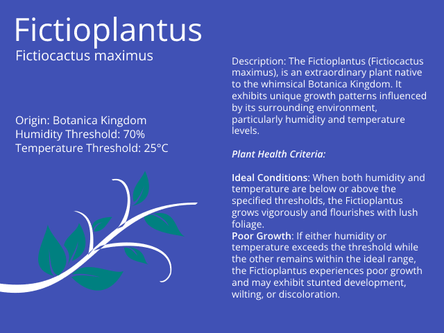
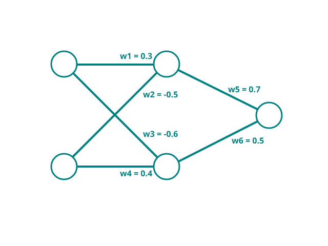

Plant monitoring
In the first chapter, Logic gates were introduced. The mini-project programmed an OR gate in Python, and later implemented it onto the TinySpark development board.
During this mini-project, plant care is of highest regard. The Fictioplantus1, as can be read below, is a very delicate plant from the Botanica Kingdom. It requires careful control of both temperature and humidity, as it will grow very poorly when conditions are not right.

The requirements for succesful growth are very particular, they are summarized in the table below.
| Temperature | Humidity | Growth |
|---|---|---|
| below 25°C | below 70% | no |
| above 25°C | above 70% | no |
| below 25°C | above 70% | yes |
| above 25°C | below 70% | yes |
Classifying inputs like the temperature and humidity is more difficult than classifying simple logic gates. The reason behind this is the case of linear and non-linear separability2. Separability refers to the property of a dataset or set of points (in this case the inputs) where it is possible to draw a straight line that can completely separate the points into different classes (below/above 25° or below/above 70% humidity in this case). The problem proposed above is such a non-linearly separable problem. To overcome this, it is nescessary to introduce more neurons into the neural network.

The network from the previous section is used here. Weights are defined as seen. For the activation function, the step function from Chapter 1 is used again. Note how in this example, negative weights are also possible in order to give inputs negative influences as well.
In order to process the inputs correctly, some pre-proccessing of the measurements needs to take place. This is done in order to make calculations easier, and to keep weights managable (in this case within ranges -1 and 1). The calculation is described below. In complicated neural networks, this pre-processing can be part of the network, in a so called Convolution step3.
Calculating the outputs for some possible input combinations is now more complicated than in the previous chapter. As inputs, a few values above and below the threshold are chosen: \(22\)°C and \(30\)°C for temperature, \(40\)% and \(85\)% for humidity. In the calculations below, first the pre-processing of the values is done, then the respective outputs are calculated. Remember that because the activation function used is still a step function, the output will always be either \(0\) or \(1\) (signifying poor and good growing conditions respectively).
Network calculation results
For the weights above, the calculated predictions for the network can be found below.
Using the interactive visualisation below, try to tune the weights so that the prediction is correct for the given inputs. The weights given above can be used as guidance, however there are many different possible combinations of weights to be found that will lead to the desired output. Note that this tuning is meant more as a exercise to see what effects weights have in a neural network. It is expected to be very difficult to find correct weights by hand.
Now program the found weights (of the pre-given ones) into a simple Python script. The weights of the network will be stored inside of an array. The inputs for temperature and humidity can be either input manually, or fetched from an external API4 that supplies weather data, such as the Dutch weather forecast Buienradar API.

# import the libraries to fetch weather data from an API
import requests
import json
# store the weights
weights = [
0.3,
-0.5,
-0.6,
0.4,
0.7,
0.5
]
# defining the activation function
def activation(x):
if x >= 0.5:
return 1
else:
return 0
# formulate the API request
response = requests.get('https://data.buienradar.nl/2.0/feed/json')
# get the temperature and humidity from the Buienradar API
# the location is currently set to De Bilt in the Netherlands
temperature = response.json()['actual']['stationmeasurements'][3]['temperature']
humidity = response.json()['actual']['stationmeasurements'][3]['humidity']
# Alternatively, input the temperature and humidity manually
# temperature = 23
# humidity = 65
# Print the inputs
print(f"Temperature: {temperature}°C, Humidity: {humidity}%")
# pre-processing the inputs
temp_in = (temperature - 25) / 10
humid_in = (humidity - 70) / 10
# perform network calculations
neuron1 = activation( (temp_in * weights[0]) + (humid_in * weights[1]) )
neuron2 = activation( (temp_in * weights[2]) + (humid_in * weights[3]) )
output = activation( (neuron1 * weights[4]) + (neuron2 * weights[5]) )
# printing the result
if output == 1:
print("Growing conditions are good")
else:
print("Growing conditions are poor")
In the next section, the network will be deployed to the TinySpark development board, utilising the on-board environmental sensor.
-
The Fictioplantus acts as a simplified plant example in this case, although principles learned in this project can be applied to real plant monitoring. ↩